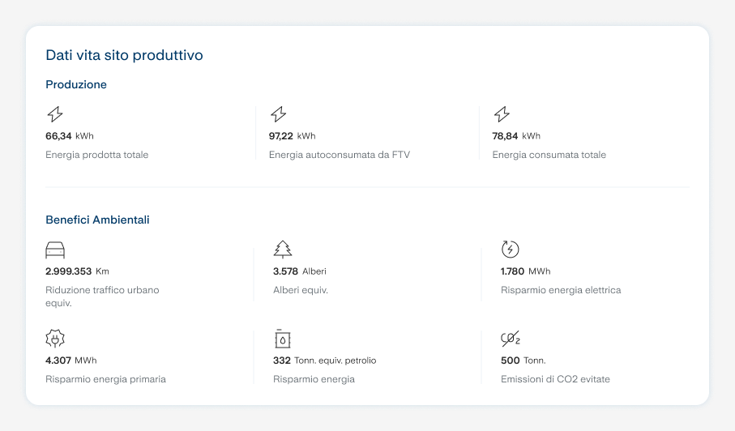
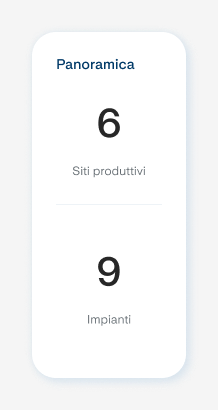
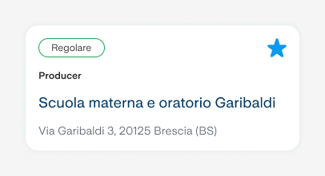
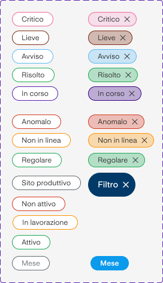

FTV Monitoring: a unified Control Room for solar plants
Real-time monitoring for the photovoltaic installations of a major Italian energy utility, replacing fragmented, vendor-locked tools with one Control Room for backoffice, maintenance teams and clients. Shipped as a web platform and a companion mobile app, both now live.

The challenge
The client, a major Italian multi-utility, manages photovoltaic, district heating and lighting systems for public administrations and municipalities across Italy, under contracts that vary widely in duration and scope. Over the years, the team had tested several disconnected monitoring platforms, including Wiser, Easy Everywhere, and various inverter-brand tools from Samsung, Coster and Trilux, each tied to a specific hardware vendor.
None of them could show aggregated data across multiple plants at once. This was a real pain point for managing energy communities in particular, which required heavy manual work to reconcile disaggregated data. The client wanted a single, proprietary control room that any operator could use to monitor every site, regardless of which hardware was installed.
What the team set out to achieve
- Reduce operational time for the backoffice team
- Reduce the time to restore a plant to normal operation after a fault
- Reduce the time to handle tickets and maintenance requests
- Give clients both single-plant and aggregated production data
- Ship a mobile app with alerts, not just a web dashboard
- Build toward a multi-service energy-efficiency platform, not just solar
Process
The project followed a full Design Thinking process, eight steps split across two phases, each alternating divergent and convergent work, run in two-week Scrum sprints with daily standups, sprint planning and review, and dedicated co-design sessions with client stakeholders.
Phase 1: Problem space (workshops)
Esplorazione
Mapped the as-is platforms and hardware the client already used to monitor plants, including Wiser, Easy Everywhere and various inverter brands, together with target users, needs and opportunities.
Ideazione
Benchmarked inspirational case studies and existing solutions, including Fusion Solar by Huawei, and prioritised the features worth carrying into the to-be platform.
Co-creazione
Organised the opportunities and drivers that emerged into concrete proposal packages, each sketching a possible project scope.
Valutazione
Analysed and validated the chosen concept, the FTV Virtual Control Room, along with its feature set and roadmap, closing out Discovery & Setup.
Phase 2: Solution space (design and delivery)
Design
Built the to-be experience from the validated requirements: content, information architecture, and the four user profiles, Admin, Backoffice, Manutentore and Cliente.
Prototipazione
UX/UI design of every screen and flow at both macro and detail level, converging on an MVP.
Implementazione
Built the solution in line with prior decisions, including the system integrations needed to connect real plant data to the platform.
Test
Internal and external testing, tracked refinements ahead of launch, then a pilot with real usage data and KPIs before the general rollout.
Roadmap
Discovery & Setup, Design & Prototype, Delivery & Sviluppo, UAT Test and Pilota ran from March through December 2025. The platform and its companion app are now complete and live.
The solution
The FTV Virtual Control Room gives every user type, internal staff, external maintenance technicians and clients, a view scoped to what they actually need.
Admin & Backoffice
Full access to every plant, user and document, the only profiles that can create new admin/backoffice accounts and manage client records.
Manutentore (maintenance)
View-only access to assigned plants and devices, alarms, and the ability to generate reports, no account or content management.
Cliente
Sees only their own plants' production data, documents and, on request, device detail, plus the economic translation of energy data where relevant.
Home page, two ways
A map view with status-coded pins per plant, and a list view combining a cumulative KPI overview with a sortable, customisable plant table.
Alarm severity, kept simple
Alerts are classified into three levels so operators can triage at a glance: Critico, the plant stops or malfunctions, Lieve, a component is faulty but the plant keeps producing, and Avviso, output has dropped due to external factors such as weather.
Mobile, scoped down
The companion mobile app targets clients and maintenance technicians specifically, a deliberately reduced slice of the web platform's information, profiled the same way. See the FTV Monitoring mobile app case study for that side of the project.
Design System components
Real pieces from the project's component library, exported directly from Figma, built to keep every screen consistent across profiles and devices.



Outcome
Both the web platform and the mobile app are complete and live. Real usage figures, ticket resolution time and adoption data aren't in the material I have on file yet.